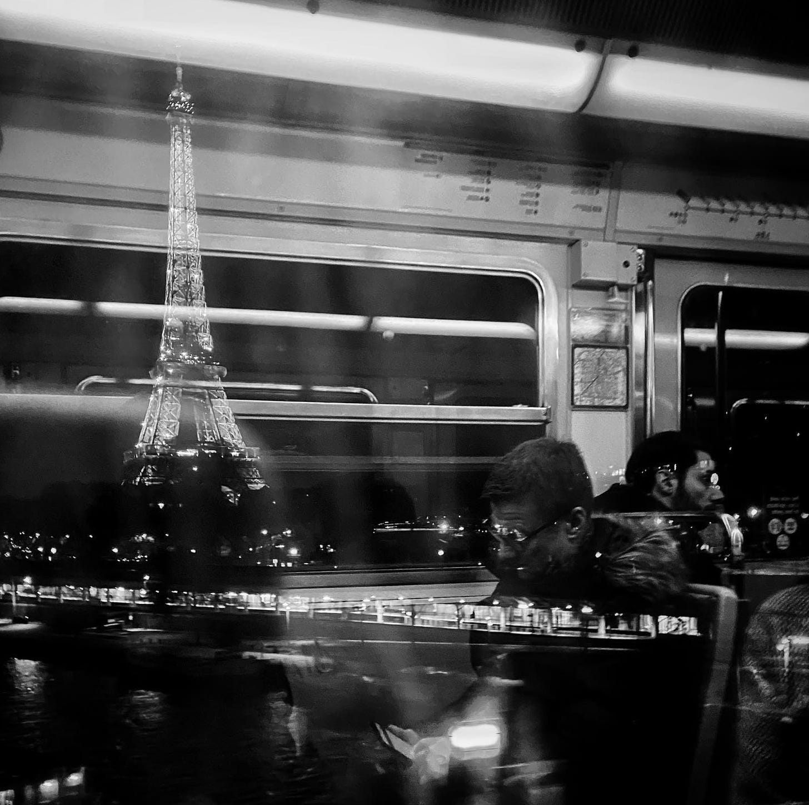
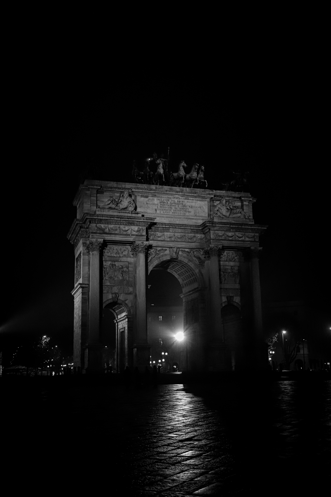
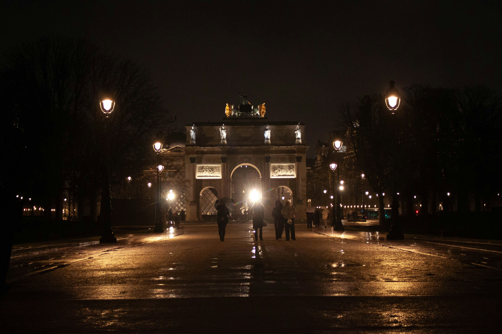

Projetada para a Exposição Universal de 1889, a torre desafiou a gravidade e as críticas da época, tornando-se o pilar definitivo da engenharia moderna em ferro pudlado.
A estrutura de treliça utiliza 18.038 peças metálicas, montadas com precisão milimétrica para suportar ventos extremos e variações térmicas no coração de Paris.

Erguido por ordem de Napoleão Bonaparte em 1806, o monumento celebra as glórias do exército francês após a vitória em Austerlitz. Suas colossais dimensões neoclássicas foram projetadas para serem o portal de entrada triunfal dos heróis de guerra na capital.
Sob sua abóbada, o Arco abriga o Túmulo do Soldado Desconhecido, guardado por uma chama eterna que jamais se apaga. Cada relevo nas fachadas narra passagens cruciais da Revolução e do Império.
